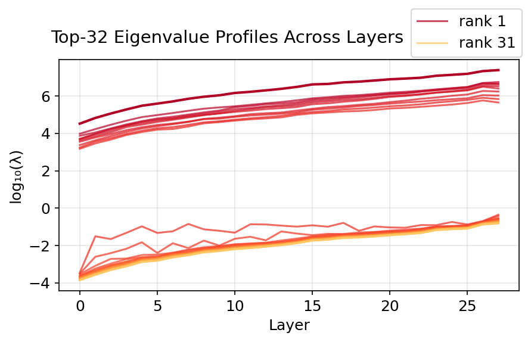
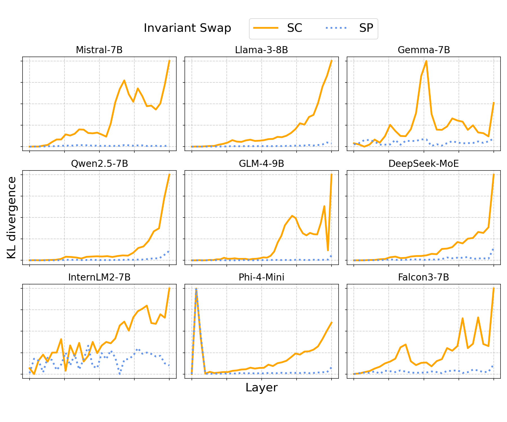
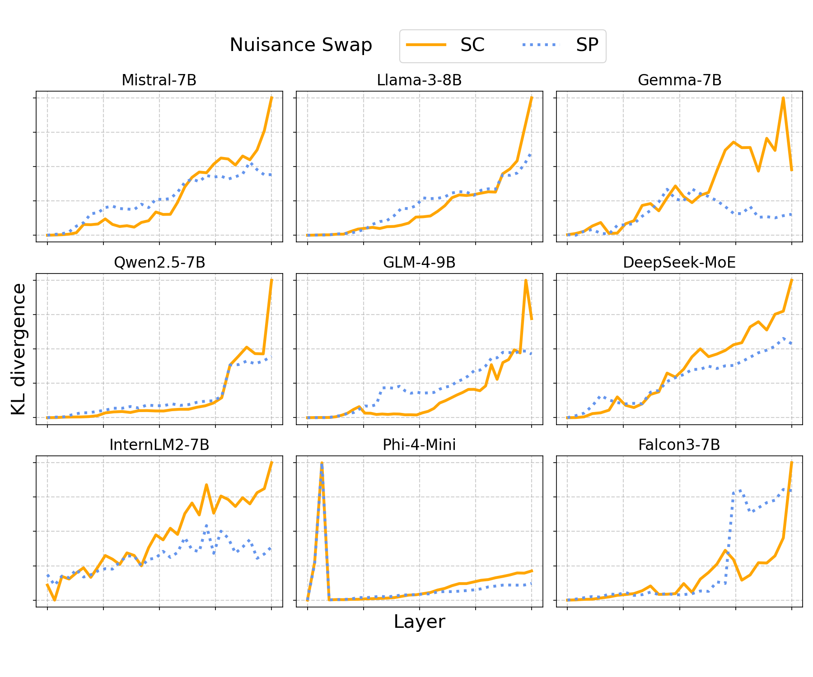
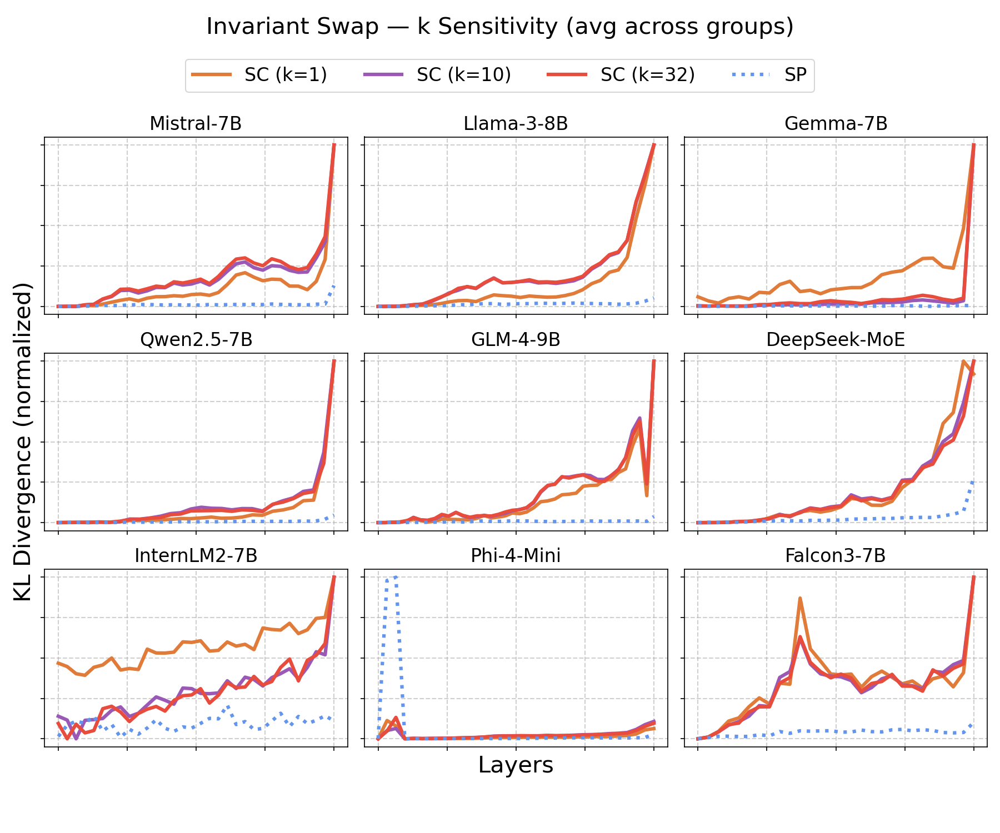
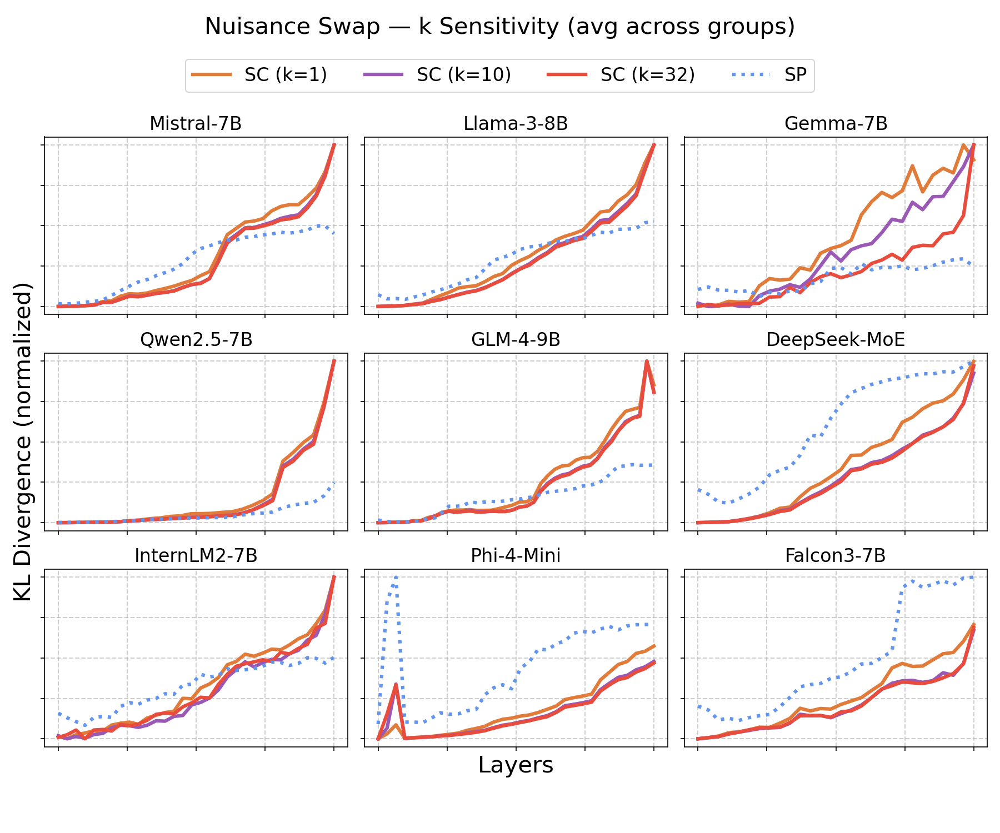

arXiv:2605.06458 · cs.LG
Invariant Features in Language Models
A geometric view of semantic invariance: paraphrases move along nuisance directions, while meaning lives in stable latent subspaces—used for analysis and zero-shot model attribution.

Abstract
Semantic stability as local geometry
Language models are robust to paraphrasing, suggesting that meaning is encoded in stable internal structure. We propose a local geometric framework in which semantically equivalent inputs occupy structured regions of latent space: paraphrastic variation travels along nuisance directions, while semantic identity is preserved in invariant subspaces.
We contribute (1) a geometric characterization of invariant latent features, (2) a contrastive subspace discovery method that separates semantic-changing from semantic-preserving variation, and (3) an application of invariant representations to zero-shot model attribution.
Framework
Three moves
From a manifold hypothesis for representations, to a data-driven eigenproblem, to fingerprints that stay useful under adaptation.
-
Geometric definition
Invariant features are stable under paraphrasing yet discriminative across meanings—locally, a projection that ignores nuisance motion on the representation manifold.
-
Contrastive sensitivity decomposition
Estimate covariances of representation changes under SP and SC edits, then solve Sscv = λ Sspv. Large-λ directions form the invariant subspace.
-
Zero-shot attribution
Aggregate layer-wise invariant projections into model-specific zone signatures and match by similarity—attribution as validation of geometric individuality.


Results
What the geometry predicts
Across nine models, invariant structure strengthens in mid-to-late layers; interventions show causal semantic selectivity; invariant projections sharpen model separability.



Models evaluated
More figures
Additional views
Intervention grids and ablations from the paper’s experimental suite.



Citation
Cite this work
Preprint on arXiv. Equal contribution marked with * in the author list.
@article{dasgupta2026invariant,
title = {Invariant Features in Language Models: Geometric Characterization and Model Attribution},
author = {Dasgupta, Agnibh and Tanvir, Abdullah and Zhong, Xin},
journal = {arXiv preprint arXiv:2605.06458},
year = {2026}
}